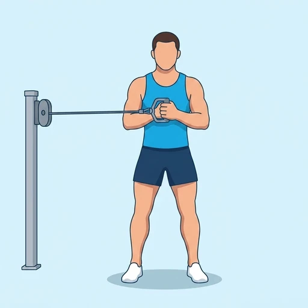

Cable Pallof Press
An anti-rotation core exercise in which a cable pulls you sideways while you press a handle straight out from your chest and refuse to let your torso turn.
Core · Cable Machine · Intermediate


Muscles worked by the Cable Pallof Press
Primary
Secondary
Also called: oblique, obliques, side abs, external oblique, internal oblique, transverse abdominis.
Equipment
Also called: cable pulley, functional trainer, cable crossover, cable column, cable station, pulley machine.
How to do the Cable Pallof Press
- Set a cable at chest height and take the handle in both hands, standing side-on to the machine.
- Step away until there is real tension on the cable, with your feet about shoulder-width apart and knees softly bent.
- Bring the handle to the centre of your chest and brace your trunk and glutes.
- Press the handle straight out in front of you until your arms are extended, resisting the pull that wants to rotate you toward the machine.
- Hold the extended position for a moment, then bring the handle back to your chest under control.
- Complete the desired reps, then turn around and repeat facing the other way.
Form tips
- Nothing should rotate. If your shoulders turn toward the cable as you press, reduce the weight — the point is the rotation that does not happen.
- The further you step from the machine, the longer the lever and the harder it gets, so you can change difficulty without touching the weight stack.
- Keep your arms level with your chest and your shoulders down; letting the handle drift up turns it into a front raise.
At a glance
| Body part | Core |
|---|---|
| Category | Strength |
| Force type | Push |
| Mechanic | Compound |
| Difficulty | Intermediate |
| Equipment | Cable Machine |
| Goals | Core, Strength |
| Tags | Core, Core focus, Lower back safe, Knee safe, No axial load, Shoulder safe |
| MET | 3.5 (metabolic equivalent, for calorie estimates) |
| Unilateral | No |
| Bodyweight | No |
| Dataset id | cable-pallof-press |
Cable Pallof Press in German & Spanish
| German | Kabelzug-Pallof-Press |
|---|---|
| Spanish | Press Pallof en Polea |
Descriptions, instructions and tips ship in all three languages in the JSON.
Related exercises
Exercise data (JSON)
The record below is exactly what exercises.json ships for this exercise — names, descriptions, instructions and tips in English, German and Spanish.
{
"id": "cable-pallof-press",
"name_en": "Cable Pallof Press",
"name_de": "Kabelzug-Pallof-Press",
"name_es": "Press Pallof en Polea",
"description_en": "An anti-rotation core exercise in which a cable pulls you sideways while you press a handle straight out from your chest and refuse to let your torso turn.",
"description_de": "Eine Anti-Rotations-Übung für den Rumpf: Der Kabelzug zieht dich zur Seite, während du den Griff gerade von der Brust wegdrückst und den Oberkörper konsequent nicht mitdrehen lässt.",
"description_es": "Un ejercicio de core antirrotación en el que la polea tira de ti hacia un lado mientras empujas el agarre recto desde el pecho y te niegas a dejar que el torso gire.",
"category": "strength",
"force_type": "push",
"mechanic": "compound",
"difficulty": "intermediate",
"equipment": "cable",
"body_part": "core",
"primary_muscles": [
"obliques",
"transverse_abdominis"
],
"secondary_muscles": [
"anterior_deltoid",
"erector_spinae",
"gluteus_medius",
"rectus_abdominis"
],
"goals": [
"core",
"strength"
],
"tags": [
"core",
"core_focus",
"lower_back_safe",
"knee_safe",
"no_axial_load",
"shoulder_safe"
],
"is_unilateral": false,
"is_bodyweight": false,
"instructions_en": [
"Set a cable at chest height and take the handle in both hands, standing side-on to the machine.",
"Step away until there is real tension on the cable, with your feet about shoulder-width apart and knees softly bent.",
"Bring the handle to the centre of your chest and brace your trunk and glutes.",
"Press the handle straight out in front of you until your arms are extended, resisting the pull that wants to rotate you toward the machine.",
"Hold the extended position for a moment, then bring the handle back to your chest under control.",
"Complete the desired reps, then turn around and repeat facing the other way."
],
"instructions_de": [
"Stell den Kabelzug auf Brusthöhe, nimm den Griff in beide Hände und stell dich seitlich zum Gerät.",
"Geh so weit zur Seite, dass echte Spannung auf dem Kabel liegt, die Füße etwa schulterbreit, die Knie leicht gebeugt.",
"Führ den Griff in die Mitte deiner Brust und spann Rumpf und Gesäß an.",
"Drück den Griff gerade nach vorn, bis die Arme gestreckt sind, und widersteh dem Zug, der dich zum Gerät drehen will.",
"Halt die gestreckte Position einen Moment und führ den Griff dann kontrolliert zurück zur Brust.",
"Absolvier die gewünschten Wiederholungen, dreh dich dann um und wiederhol zur anderen Seite."
],
"instructions_es": [
"Coloca la polea a la altura del pecho y toma el agarre con ambas manos, situado de lado respecto a la máquina.",
"Sepárate hasta que haya tensión real en el cable, con los pies a la anchura de los hombros y las rodillas ligeramente flexionadas.",
"Lleva el agarre al centro del pecho y aprieta el tronco y los glúteos.",
"Empuja el agarre recto hacia delante hasta extender los brazos, resistiendo el tirón que quiere rotarte hacia la máquina.",
"Mantén un instante la posición extendida y devuelve después el agarre al pecho de forma controlada.",
"Completa las repeticiones deseadas, luego date la vuelta y repite hacia el otro lado."
],
"tips_en": [
"Nothing should rotate. If your shoulders turn toward the cable as you press, reduce the weight — the point is the rotation that does not happen.",
"The further you step from the machine, the longer the lever and the harder it gets, so you can change difficulty without touching the weight stack.",
"Keep your arms level with your chest and your shoulders down; letting the handle drift up turns it into a front raise."
],
"tips_de": [
"Nichts soll sich drehen. Wenn die Schultern beim Drücken zum Kabel wandern, nimm Gewicht weg — der Sinn ist die Rotation, die eben nicht stattfindet.",
"Je weiter du vom Gerät weggehst, desto länger der Hebel und desto schwerer die Übung: So änderst du die Schwierigkeit, ohne den Gewichtsblock anzufassen.",
"Halt die Arme auf Brusthöhe und die Schultern tief; lässt du den Griff nach oben wandern, wird daraus ein Frontheben."
],
"tips_es": [
"Nada debe rotar. Si los hombros giran hacia la polea al empujar, baja el peso — lo que entrena es la rotación que no llega a ocurrir.",
"Cuanto más te alejes de la máquina, más largo es el brazo de palanca y más cuesta, así que puedes cambiar la dificultad sin tocar el stack.",
"Mantén los brazos a la altura del pecho y los hombros abajo; dejar que el agarre suba lo convierte en una elevación frontal."
],
"met": 3.5,
"images": {
"flat": {
"start": "images/flat/cable-pallof-press-start.webp",
"peak": "images/flat/cable-pallof-press-peak.webp"
}
}
}Fetch just this exercise
const { exercises } = await fetch(
"https://exercise-dataset.com/exercises.json"
).then(r => r.json());
const ex = exercises.find(e => e.id === "cable-pallof-press");Free for personal and commercial in-app use with attribution (“Exercise data by RepDB”) — see the license and ready-made attribution snippets. Redistributing the data as a dataset or API is not permitted.